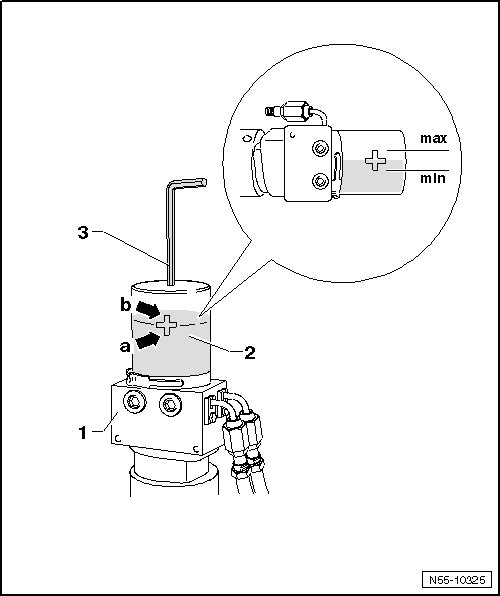

Procedures
Rear Lid
Hydraulic Oil, Filling and Checking Level
• The hydraulic system is self-bleeding and maintenance-free. To bleed the system, open and close the rear lid 2 or 3 times automatically.
• The rear lid hydraulic drive is a closed hydraulic system. As a rule, a filling is only required after opening the hydraulic circuit (for example, after replacing parts).
• Always support the rear lid whenever working on the hydraulic system.
• Hydraulic system is sensitive to any ingress of dirt.
• Leaking oil should be collected and disposed of properly.
• After working on hydraulic system, check the oil level before operating and correct if necessary.
CAUTION!
Hydraulic oil damages paint. If hydraulic oil comes into contact with painted surfaces, remove oil immediately.
Hydraulic oil and cleaning materials contaminated with hydraulic oil must be disposed of properly.
Too much oil will damage the system.
If the oil level is too low, the rear lid will not open or close completely. The pump will also make noises.
Hydraulic Oil, Filling and Checking Level

- Remove left side wall trim.
- Remove left sill panel strip.
CAUTION!
Too much oil will damage the system.
If the oil level is too low, the rear lid will not open or close completely.
Fill the hydraulic oil
• The rear lid is opened all the way and supported.
- Move the hydraulic pump - 1 - vertically.
- Remove the bolt - 3 -.
- Fill the hydraulic oil. The oil level must be between - arrow b - and - arrow a -.
- Install screws - 3 -. Tightening specification: 1 Nm.
Check the oil level
- Open and close the rear lid 2 or 3 times automatically.
- Lay the hydraulic pump horizontally.
- The oil level must now be between the - max - and - min - markings on the cross.